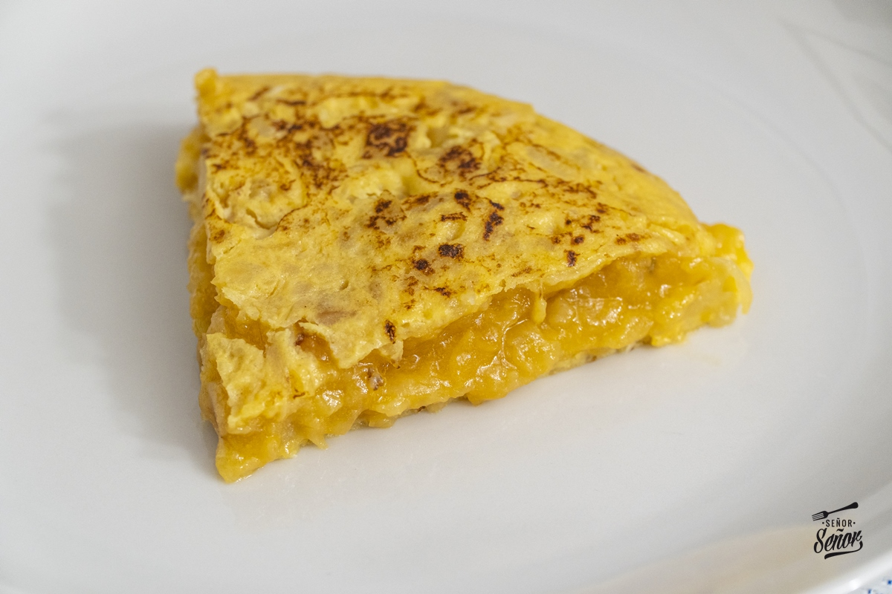

Tortilla de Patatas
Ingredientes
- 6 huevos
- 1 kg de patatas
- 1 cebolla
- Aceite de oliva
- Sal
Imagen de la receta elaborada

Pasos de elaboración
- Pelar y cortar las patatas en láminas finas.
- Freír las patatas y la cebolla en aceite.
- Batir los huevos y mezclar con las patatas.
- Cuajar la mezcla en la sartén por ambos lados.
Descarga
Descargar receta en PDF
← Volver al menú